Sharper. More digital.
Three SVG directions from your references. Pure black and white.
Y2K outline
Angular & stretchedA swept five-point silhouette with a precise open center. The most overtly Y2K direction.


LED matrix
Digital & expressive
194 equal dots on a fixed grid. A digital-display treatment of the same swept star language.


Precision
Clean & minimal
Long diagonal rays and matched concave curves. A compact, quiet signature for the app.


Y2K outline at app scale
Use 32 px or larger for the open center to hold clearly.
LED matrix at display scale
Best at 96 px and above. The individual dots soften at small sizes; this is the expressive display option.
Precision at app scale
The simplest solid mark. Use 24 px and above; fine tips naturally shorten when reduced.
A useful pairing
Precision is my pick for a clean app identity. LED matrix adds the strongest digital personality to posters, social graphics, and larger placements. Y2K outline is the bolder alternative if you want the logo itself to carry that era's energy.